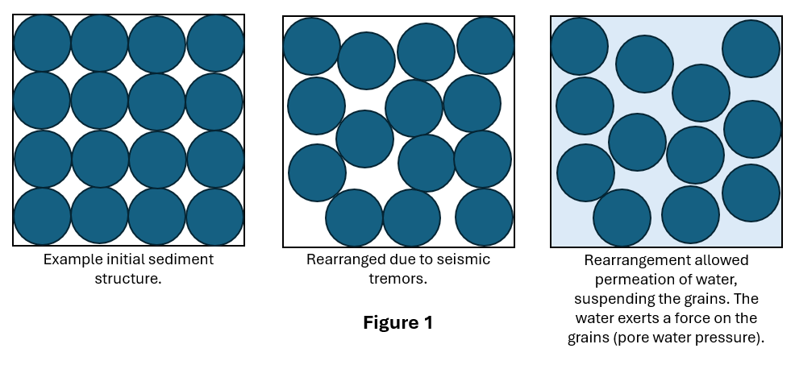

Earthquakes happen when rock moves relative to another rock. This happens most often in fault zones, such as the San Andreas Fault or
(Stephen Davies et al., 2017, pp. 220) (Schulz, S. and Wallace, R., 1993). This movement causes great stress to be released in a very
short time frame. The movement causes shock waves (tremors) to travel outwards. These tremors travel through the Earth and is the main
cause for what is felt and seen during an earthquake (Stephen Davies et al., 2017, pp. 220). These shock waves are also responsible for
most of the damages caused during an earthquake.
The phenomenon of soil liquefaction is where the ground loses vast amounts of strength and acts like a fluid, due to large amounts of
water causing high pore water pressure (Saikia, R., Chetia, M., 2013). The liquefaction is triggered by an applied stress, such as shock
waves from an earthquake (USGS, 2017). Liquefaction can devastate infrastructure and buildings, causing extensive damage to communities.
There are several factors that impact liquefaction and the susceptibility of an area to liquefaction (Saikia, R., Chetia, M., 2013).
Keywords:
Saturated and unsaturated – Pore spaces in saturated rock or soil are fully filled with water, thus being saturated. Unsaturated is where
the pore spaces are either partially filled with water or empty (USGS, 1999).
Water table – The layer that marks the division between saturated rock or soil below and non-saturated rock or soil above (Stephen Davies
et al., 2017, pp. 320).
Pore water pressure – The pressure that the groundwater within saturated rock or soil is under (Davison, L., 2000).
Analysis and Discussion
Soil is an unconsolidated sediment made from lots of smaller grains with empty air pockets between them called pores (Saikia, R., Chetia,
M., 2013). The pores allow for water to permeate through the soil. The force on the grains due to the water within the pores is called
“pore water pressure” (Davison, L., 2000, para 1). Under normal conditions the weight of the grains holds the soil together (Saikia, R.,
Chetia, M., 2013), however under certain circumstances this can change. For example earthquake tremors can cause a rearrangement of
grains within the soil (Pacific Northwest Seismic Network, no date, para 2).
For liquefaction to occur there must be an abundance of water within the rocks and soil, and the water table must be relatively high
(Stephen Davies et al., 2017, pp. 223). When the shock waves pass through the bedrock, the water in the saturated rock below the water
table will separate from the solid particles and proceed to migrate upwards towards the surface (Stephen Davies et al., 2017, pp. 223). If
the water cannot drain away, the water builds up between the grains in the soil causing rising pore water pressure. If the pore water
pressure is high enough, the grains can become suspended (Saikia, R., Chetia, M., 2013), either fully or partially, allowing the soil to
temporarily behave as a fluid [See figure 1] (Stephen Davies et al., 2017, pp. 223).

One major factor for liquefaction of a soil is the grain size. Saikia, R. and Chetia, M. (2013) discuss work done by Tsuchida in 1970 on
how different soils liquefied or not. He found that soils with high gravel content (larger grain size) only tended to liquefy during very
high intensity ground shaking. It was found that the gravel also aided in the dissipation of the high pore water pressure seen during
liquefaction. It was concluded that coarser soils were less susceptible to liquefaction. Saikia, R. and Chetia, M. (2013) go on to discuss
the work from others, including Ishihara and Walker and Steward, who investigated how finer, siltier soils react to ground shaking. It was
stated that clay-size and silt-sized soils also showed potential for liquefaction, even though the soils were outside of what Tsuchida had
predicted.
The thickness of the soil layer will influence how the soil liquefies. A thicker layer of liquefied soil is much more likely to cause
extensive damages to infrastructure and buildings (Saikia, R., Chetia, M., 2013). Thinner layers would not cause great damages as the
displacement would not be significant enough.
The age of a soil changes how the soil reacts to earthquakes and its susceptibility to liquefaction. In general aging can increase a soil’s
stability and stiffness, which in turn reduces the soil’s liquefaction potential (Bwambale, B., Andrus, D., 2019). As Bwambale, B. and
Andrus, D. (2019) refer to, there are many examples if where similar soils, except in age, react very differently when an earthquake hit.
They all showed that the older soil resisted the liquefaction that happened in the younger soils. The reason for older soils being more
liquefaction resistant could come from the extra cementation between grains, which is essentially non-existent in younger soils (Saikia, R.,
Chetia, M., 2013). This brings strength as precipitated minerals between the grains hold the soil together (Stephen Davies et al., 2017,
pp. 61). The minerals also fill the pores within the soil, reducing the permeability. This reduces the susceptibility of the soil to
liquefaction.